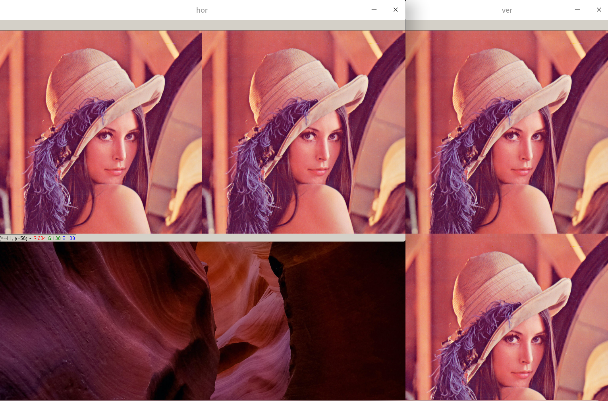
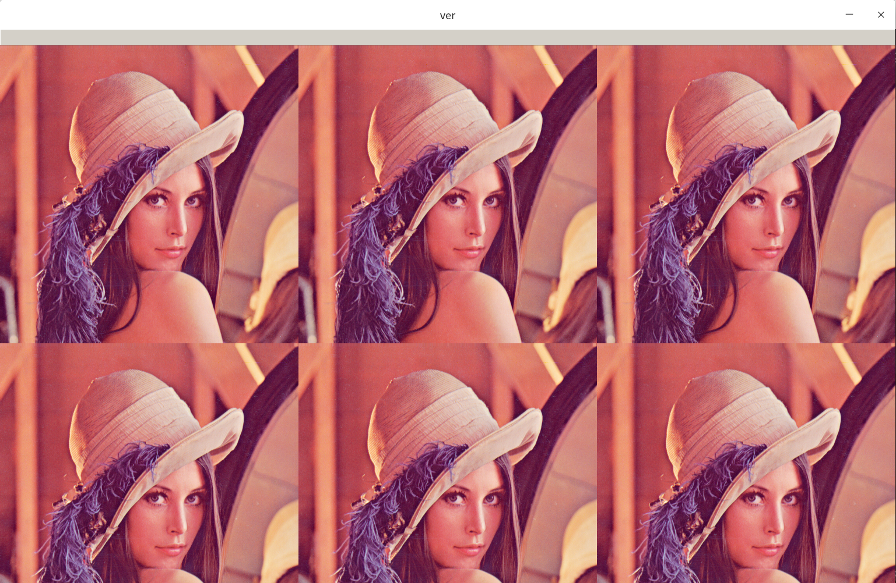
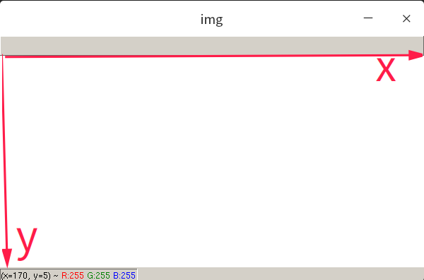
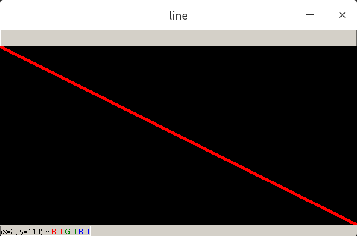
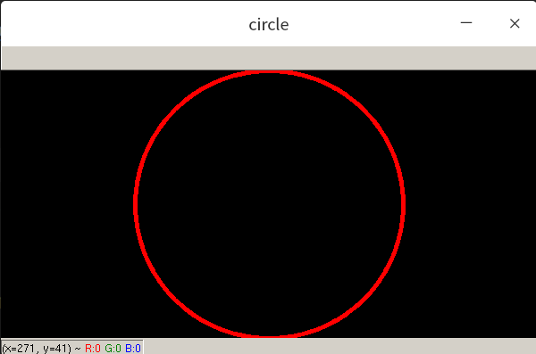
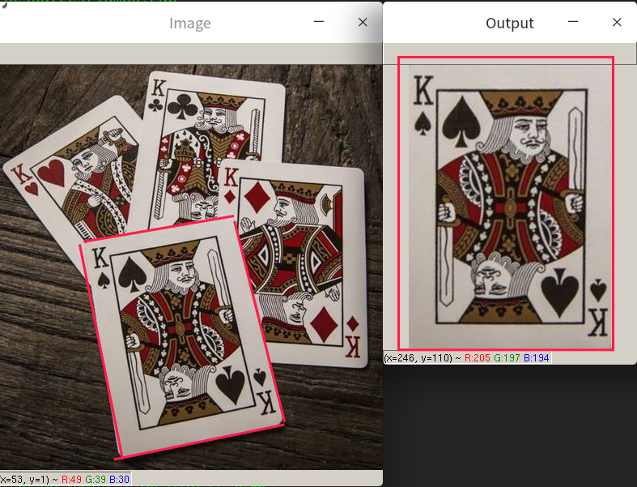

cv2
在cv2的矩阵中，0代表黑色
install
pip install opencv-python
import
import cv2
图片
读取图片
cv2.imread(path)
展示图片
cv2.imshow("description",img)
等待键盘输入后，再退出循环。
cv2.waitKey(0)
若希望键盘输入q后，才退出
while True:
if cv2.waitKey(1) & 0xFF == ord('q'):
break
栅格展示
def hv_stack(img: np.ndarray):
img_hor = np.hstack((img, img))
img_ver = np.vstack((img, img))
cv2.imshow("hor", img_hor)
cv2.imshow("ver", img_ver)
将同一shape的图片水平堆叠、垂直堆叠到一起

将水平堆叠的图片，垂直堆叠到一起
def hv_stack(img: np.ndarray):
img_hor = np.hstack((img, img, img))
img_ver = np.vstack((img_hor, img_hor))
cv2.imshow("ver", img_ver)

兼容多尺度的图片展示
上述的栅格展示只能把相同shape的图片放在一起展示，如下的函数支持不同shape的图片的栅格展示 Just click to see it
灰度化
imgGray = cv2.cvtColor(img, cv2.COLOR_BGR2GRAY)
绘图
line
修改传入图片的值，而不是生产一个新的图片
在opencv中

matrix = np.zeros((300, 600, 3), np.uint8)
绘制一条直线

def draw_line(img: np.ndarray):
start = (0, 0)
end = (img.shape[1], img.shape[0])
color = (0, 0, 255)
thickness = 3
cv2.line(img, start, end, color, thickness)
draw_line(matrix)
cv2.imshow("line", matrix)
cv2.line() start起点，end终点，thickness线的宽度；
通过cv2.line实现对图片矩阵数值的修改后，再通过cv2.imshow展示图片。
注意到，终点的坐标end = (img.shape[1], img.shape[0])。
在opencv中，第一个元素是横轴，在numpy矩阵中，第一个元素是纵轴；
rectangle

只需要给出矩形左上角坐标和右下角坐标即可
def draw_rectangle(img: np.ndarray):
start = (200, 100)
end = (img.shape[1], img.shape[0])
color = (0, 255, 0)
thickness = 3
cv2.rectangle(img, start, end, color, thickness)
draw_rectangle(matrix)
cv2.imshow("rec", matrix)
填充矩形

不要通过加粗矩形框的宽度，使用cv2.FILLED
def draw_rectangle(img: np.ndarray):
start = (200, 100)
end = (img.shape[1], img.shape[0])
color = (0, 255, 0)
cv2.rectangle(img, start, end, color, cv2.FILLED)
draw_rectangle(matrix)
cv2.imshow("rec", matrix)
circle

def draw_circle(img: np.ndarray):
center = (300, 150)
radius = 150
color = (0, 0, 255)
thickness = 3
cv2.circle(img, center, radius, color, thickness)
putText
cv2.putText(img, "Great Again", (300, 150), cv2.FONT_HERSHEY_COMPLEX, 1, (255, 255, 0), 1)
图片切割
把图片从原图扣出来。给定4个坐标，(旋转后)放入新的框内。
def crop1(img: np.ndarray):
img = cv2.imread("Resources/cards.jpg")
width, height = 250, 350
pts1 = np.float32([[111, 219], [287, 188], [154, 482], [352, 440]])
pts2 = np.float32([[0, 0], [width, 0], [0, height], [width, height]])
matrix = cv2.getPerspectiveTransform(pts1, pts2)
imgOutput = cv2.warpPerspective(img, matrix, (width, height))
cv2.imshow("Image", img)
cv2.imshow("Output", imgOutput)
cv2.waitKey(0)

参考资料
basic tutorial https://github.com/murtazahassan/Learn-OpenCV-in-3-hours
cv pro https://www.bilibili.com/video/BV18B4y1c7r4